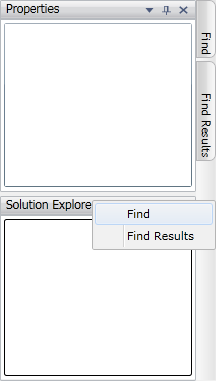

When you right click the side panel, context menu will appear listing the windows that are autohidden in this panel. If you select any item, particular window will be activated.

Figure 90: AutoHideTabContextMenu
We can prevent this context menu from appearing by cancelling the AutohideTabContextMenuOpen event.
|
[C#]
this.dockingManager.AutoHideTabContextMenuOpen += new AutoHideTabContextMenuOpenEventHandler(dockingManager_AutoHideTabContextMenuOpen);
void dockingManager_AutoHideTabContextMenuOpen(object sender, AutoHideTabContextMenuOpenEventArgs args) { args.Cancel = true; }
|